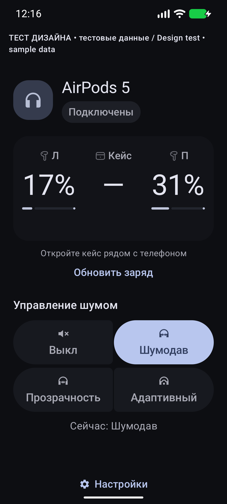

Заряд перед глазами
Левый, правый, кейс — когда наушники передают эти данные. Полноразмерные модели показывают один процент. Неизвестное остаётся «—».
Android 12+ · Бесплатно · Открытый код
Заряд AirPods и Sony, режимы шума, виджет и плитка в шторке. AirMode делает нужное — прямо на вашем телефоне.
2,4 МБ · Android 12 и новее · Без root
Без аккаунта, рекламы и подписки. Работает офлайн.

Левый, правый, кейс — когда наушники передают эти данные. Полноразмерные модели показывают один процент. Неизвестное остаётся «—».
Кнопки в приложении и виджете, цикл режимов в плитке. Состояние обновляется по ответу наушников. Набор режимов зависит от модели.
Системные цвета и тёмная тема, крупный шрифт, тихая карточка при подключении. Уведомления включаете вы.
Начать пользоваться
Модели и версии
AirMode устанавливается на Android 12+, включая Android 16 и 17. Режимы AirPods требуют доступного канала Bluetooth; на некоторых прошивках может работать только заряд. Физическая кнопка или ножка наушников работает без приложения.
| Наушники | Функции по модели |
|---|---|
| AirPods 1–3, AirPods 4 без ANC | Заряд; без кнопок шума |
| AirPods 4 ANC, AirPods 5, Pro 2/3, Max 2 | Заряд и до четырёх режимов |
| AirPods Pro 1, Max 1 | Заряд и три режима |
| Sony WH / WF / WI / MDR / LinkBuds / ULT WEAR | Заряд и доступные режимы по ответам MDR V1/V2; конкретная прошивка определяет функции |
Распознавание модели в коде не равно физической проверке каждой модели. Beats и проводные EarPods не реализованы. Sony Adaptive Sound Control не приравнивается к режиму «Адаптивный» AirPods.
Пользователь сообщил о хорошей работе AirPods и отображении заряда Sony. Реальный отчёт Pixel 10 Pro · Android 17 · CP41.260831.007.A3 · AirPods 5 A3532 содержит заряд Л/П и ответы всех четырёх режимов. Точная модель Sony не указана; управление шумом Sony отдельно не подтверждено.
Официальный APK также установлен и запущен в эмуляторах Android 16 и Android 17 beta / API 37 с памятью 16 КБ. Pixel 11 Pro, другие прошивки и новейшая QPR3 beta DP11.260918.005/.006 ещё требуют отдельной физической проверки. Будущие beta могут изменить Bluetooth-стек.
Подробные результаты проверок ↗ · Текущие beta Android у Google ↗Помощь
Откройте кейс рядом с телефоном и нажмите «Обновить заряд». Между короткими сканами не меньше 15 секунд. Закрытый или далёкий кейс может не отправлять данные. Старый процент отдельно подписывается; неизвестное не заменяется нулём или 100%.
Возможно, модель без ANC, ещё не определена или телефон блокирует канал управления. Для AirPods попробуйте Pixel с Android 16 QPR3 / Android 17. Для Sony закройте Sound Connect и переподключите наушники. У неизвестной прошивки могут быть доступны только данные заряда.
Виджет выбирает режим напрямую. Плитка перебирает режимы, отмеченные в настройках; долгое нажатие открывает приложение. Подсветка меняется по подтверждению наушников. При отключении управление недоступно.
Включите уведомление при подключении в AirMode и разрешите системные уведомления. Проверьте канал «Заряд» и «Не беспокоить». Android решает, показывать ли карточку поверх экрана. Отказ в уведомлениях не мешает заряду в приложении.
В приложении нет INTERNET, геолокации, микрофона, аккаунта, рекламы и аналитики. Данные наушников остаются на телефоне. Скачивание и внешние ссылки обслуживает браузер. Код доступен под Apache-2.0; ключи proximity живут только в памяти сессии.
Стабильная версия 0.2.0. Бесплатная загрузка, открытый код.